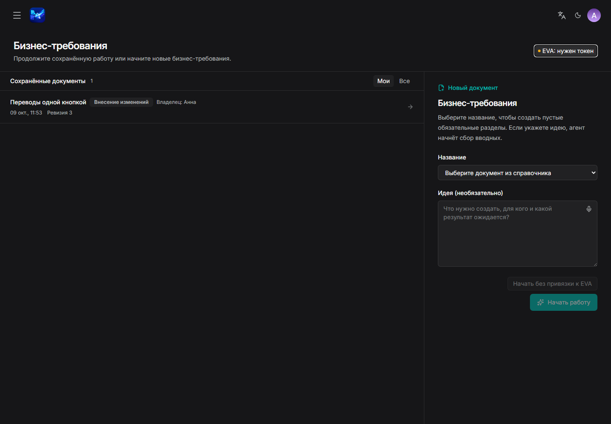
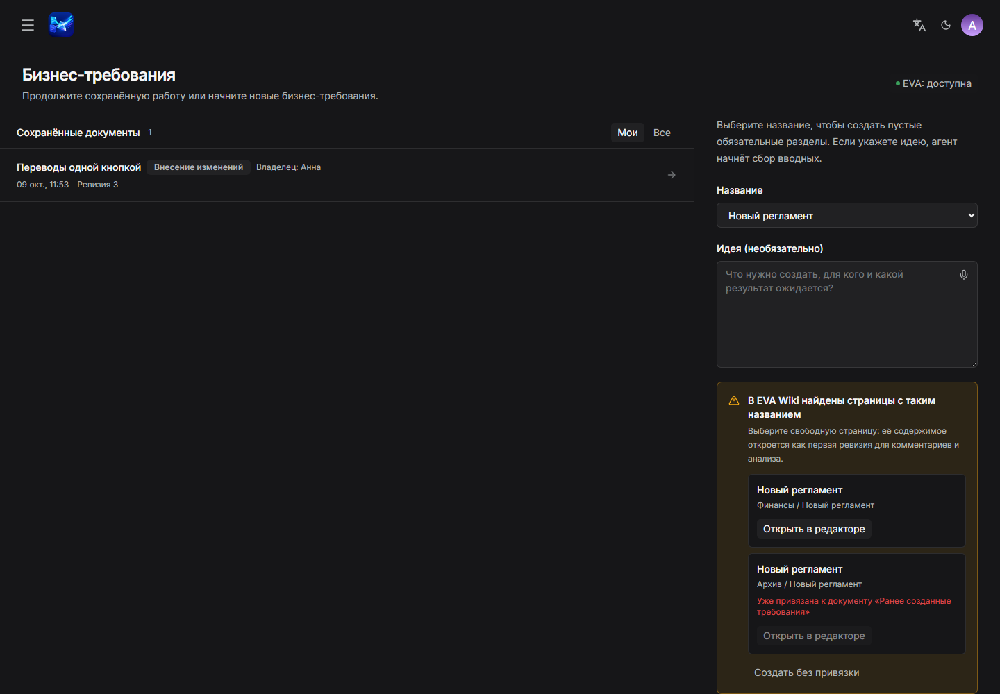
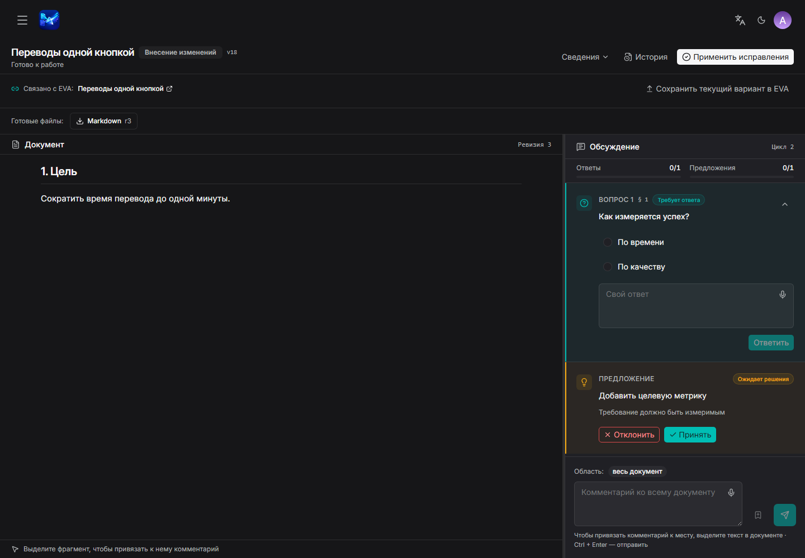
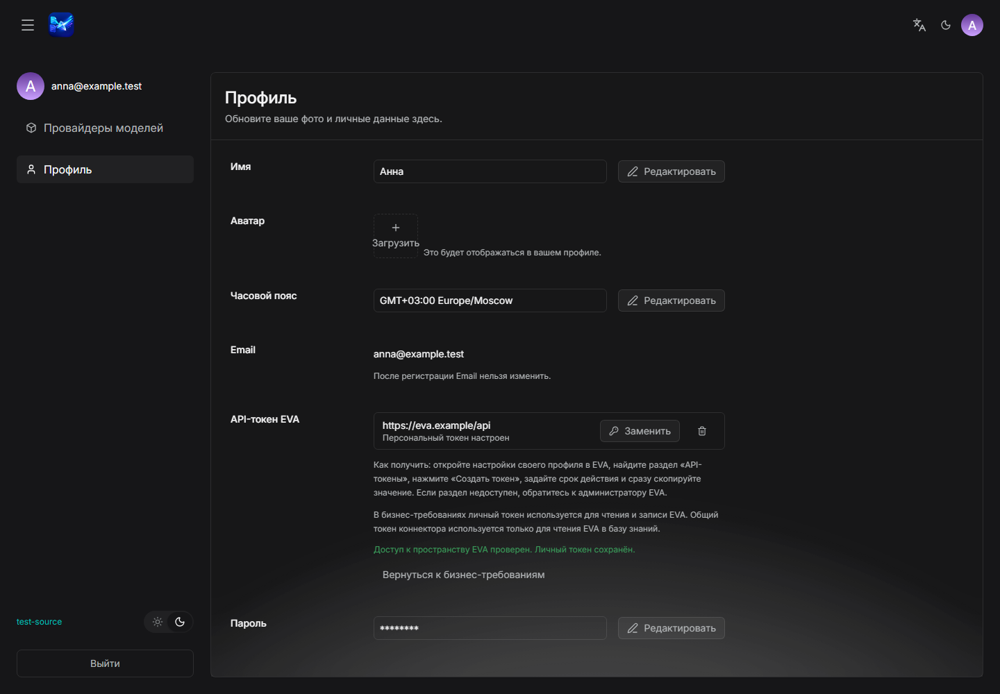

Работа с документами бизнес-требований и доступные настройки учётной записи
Обновлено: 13 октября 2026
Эта инструкция описывает раздел Бизнес-требования, экран Профиль, выбор LLM, переключение темы и выход из системы.
Основной объект работы — документ бизнес-требований. Заголовок страницы Бизнес-требования и заголовок списка Сохранённые документы обозначают области интерфейса, а не отдельные типы документов.
1. Быстрый старт
В верхнем меню откройте Бизнес-требования.
Начните новый документ.
Выберите Название из каталога, при необходимости заполните Идея и нажмите Начать работу. Без идеи сразу откроется пустая структура с обязательными разделами; заполняйте её через комментарии и анализ замечаний, начиная с шага 6.
Одна свободная одноимённая страница EVA импортируется автоматически. При нескольких совпадениях или занятой странице проверьте предложенный путь и выберите Открыть в редакторе либо Создать без привязки. После импорта добавьте комментарии и нажмите Проанализировать замечания. В остальных случаях дождитесь анализа вводных и ответьте на открытые вопросы.
Нажмите Создать черновик.
Внесите изменения, подтвердите предложения и нажмите Применить исправления.
Убедитесь, что появилась новая ревизия и состояние Правки внесены.

Раздел Бизнес-требования: сохранённая работа слева, создание документа справа.
2. Создание документа бизнес-требований
Новый документ
Откройте раздел Бизнес-требования и найдите форму нового документа.
В поле Название выберите документ из каталога.
При необходимости в поле Идея (необязательно) опишите задачу, ожидаемый результат, ограничения и известных участников процесса.
Нажмите Начать работу один раз и дождитесь результата.
Если идея не указана и содержимое не импортируется из EVA, документ сразу откроется с пустыми обязательными разделами. Необязательные разделы не добавляются, анализ вводных не запускается. Добавляйте информацию через Комментарий, затем используйте Проанализировать замечания и Применить исправления. Разделы можно заполнять постепенно: документ останется в состоянии Внесение изменений, пока обязательное содержимое и диаграммы не будут заполнены.
Если документа бизнес-требований с этим названием ещё нет, а в EVA найдена свободная одноимённая страница, система автоматически загрузит её. После импорта документ будет создан из опубликованного содержимого и сразу откроется в редакторе. В нём уже доступны поле Комментарий и кнопка Проанализировать замечания; анализ вводных для этого сценария не запускается.
Если результат запроса неясен из-за ошибки сети, сначала обновите список Сохранённые документы. Не создавайте второй документ, пока не убедитесь, что первый отсутствует.
Совпадение с EVA
При нескольких совпадениях или единственной странице, уже связанной с другим документом, появится сообщение В EVA Wiki найдены страницы с таким названием:
проверьте название и путь каждой найденной страницы;
нажмите Открыть в редакторе, чтобы импортировать выбранную свободную страницу как первую ревизию документа;
нажмите Создать без привязки, если связь с EVA не нужна.
Важно. Импорт только читает опубликованное содержимое и не изменяет страницу EVA. Подготовка и публикация изменений в EVA остаются отдельными подтверждаемыми действиями.

Проверяйте путь страницы перед действием Открыть в редакторе.
3. Сохранённые документы
В области Сохранённые документы доступны два фильтра:
Мои — документы, которыми вы владеете;
Все — все документы, доступные вашей роли.
В карточке документа отображаются владелец, номер ревизии, время изменения, состояние документа и текущая операция.
Что отображается
Возможные значения
Состояние документа
Сбор вводных, Внесение изменений, Правки внесены, В архиве
Текущая операция
Готово к работе, Анализ вводных, Анализ замечаний, Создание черновика, Применение изменений, Подготовка файла, Операция завершилась с ошибкой
Документ в состоянии В архиве доступен только для чтения.
4. Вводные, вопросы и черновик
Во время Сбора вводных система анализирует описание идеи и формирует уточняющие вопросы.
Откройте карточку Вопрос.
Выберите готовый вариант или заполните поле Свой ответ.
Нажмите Ответить.
Повторите действия для остальных вопросов.
После завершения анализа нажмите Создать черновик.
Статусы вопроса Требует ответа, Ответ зафиксирован и Закрыт описывают его состояние. Отдельного пользовательского действия «закрыть вопрос» нет.
Не закрывайте страницу во время операций Анализ вводных и Создание черновика, если хотите наблюдать за прогрессом. При этом повторное открытие документа не отменяет выполняемую операцию.
5. Внесение изменений
Рабочая область внесения изменений состоит из панели Документ и панели Обсуждение. В обсуждении находятся вопросы, ответы, предложения и комментарии текущего цикла.

Рабочая область внесения изменений: содержание документа и связанное Обсуждение.
Комментарий
Чтобы прокомментировать весь документ, оставьте область весь документ.
Чтобы привязать комментарий к тексту, выделите нужный фрагмент.
Заполните поле Комментарий.
Нажмите Добавить комментарий.
Если отображается сообщение Фрагмент относится к предыдущей ревизии, сначала перечитайте актуальный текст и проверьте контекст замечания.
Предложение
Карточка Предложение содержит обоснование и действия Принять и Отклонить. Нажатие Принять сразу запускает внесение выбранного предложения: отдельная подготовка и подтверждение не нужны. Пока система готовит текст, отображается ход работы. После сохранения новой ревизии текст на экране обновляется автоматически, а предложение получает статус Применено. Остальные вопросы можно оставить без ответа и продолжить работу с ними позже. Новый анализ использует уже сохранённую ревизию.
Если применение завершилось ошибкой, документ сохраняет прежний текст. У принятого, но ещё не применённого предложения доступна кнопка Применить для повторной попытки. Отклонить только сохраняет отказ от предложения.
Применение
После новой обратной связи нажмите Проанализировать замечания.
Дождитесь состояния Готово к работе.
Проверьте вопросы и решения по предложениям.
Нажмите Применить исправления.
Дождитесь новой ревизии и состояния Правки внесены.
Чтобы изменить уже согласованный документ, нажмите Начать вносить изменения. Это открывает новый цикл внесения изменений.
6. История, экспорт и архив
История
Откройте История, чтобы увидеть Ревизию N, время изменения, автора, инициатора и исполнителя. Перед повторным действием после конфликта версии обновите страницу и проверьте последнюю ревизию.
Экспорт
В согласованном документе доступны действия:
Создать Markdown;
Создать HTML для EvaWiki.
Сначала запускается Подготовка файла. Скачивайте результат после завершения операции. Формат DOCX в текущем интерфейсе не предлагается.
Архив
Нажмите В архив.
Проверьте предупреждение Архивировать документ?.
Подтвердите действие.
Архивация обратимо ограничивает редактирование. Безвозвратное удаление — другое действие, доступное только расширенным ролям.
7. Работа с EVA
Личный доступ
Раздел Бизнес-требования использует личный EVA-токен для всех обращений к EVA: поиска страниц, импорта, проверки и загрузки обновлений, сохранения черновика и публикации. Общий токен предназначен только для чтения EVA при загрузке в Базу знаний и не подменяет личный токен в бизнес-требованиях.
Чтобы создать локальный документ при недоступном личном доступе к EVA, выберите название и нажмите Начать без привязки к EVA. Это действие не ищет и не импортирует страницы EVA.
Без личного токена или при его отклонении обращения к EVA недоступны. При этом можно продолжать локальную работу с документом: добавлять комментарии, анализировать замечания и вносить изменения согласно своей роли.
Настройку адреса EVA и пространства выполняет администратор. Добавление и замена личного токена описаны в разделе 8. Профиль.
Индикация доступа и переход к настройкам
В списке бизнес-требований отображается компактный индикатор EVA. Нажмите его, чтобы увидеть причину проблемы и доступное действие.
В открытом документе отображается одно предупреждение рядом с действиями EVA. Повторного индикатора в шапке нет.
В настройках профиля отображаются форма личного токена и результат его проверки.
Состояние
Что делать
EVA: нужен токен
Нажмите Добавить токен, чтобы открыть нужное подключение в профиле. До добавления токена чтение и запись EVA недоступны.
EVA: обновите токен
Нажмите Обновить токен и замените значение. Токен мог истечь или быть отозван; при необходимости используйте Проверить снова.
EVA: нет доступа
Проверьте права на страницу и операцию в EVA. Обратитесь к администратору пространства; замена токена сама по себе не даёт дополнительных прав.
EVA: недоступна
Используйте Повторить проверку позднее. Сетевая ошибка сама по себе не означает, что токен истёк.
EVA: доступ не проверен
Нажмите Проверить доступ. Сохранённое значение токена ещё не подтверждает его действительность.
EVA: доступна
Личный доступ для чтения пространства EVA подтверждён. Право записи проверяется при выполнении операции. Действия с EVA доступны с учётом вашей роли, прав на страницу и состояния документа. В открытом документе предупреждение не показывается.
EVA: не подключена
Обратитесь к администратору RAGFlow для настройки адреса и пространства EVA. Добавление личного токена не заменяет настройку подключения.
Кнопки Добавить токен и Обновить токен ведут в Настройки → Профиль → API-токен EVA. После действия Проверить и сохранить появляется результат проверки. Используйте Вернуться к бизнес-требованиям, чтобы продолжить работу. Настройки открываются в новой вкладке; исходный документ и незавершённый ввод остаются открытыми. Сохранение или публикацию в EVA после восстановления доступа запустите самостоятельно; повторная запись автоматически не выполняется.
Сохранить текущую редакцию в EVA
В связанном с EVA документе в состоянии Внесение изменений или Правки внесены нажмите Сохранить текущий вариант в EVA. Проверьте вкладки Вариант агента и Diff, затем подтвердите изменения, сохраните черновик в EVA и отдельно подтвердите публикацию.
Пустая привязанная страница EVA доступна для первоначального сохранения. Отсутствие опубликованного текста не считается ошибкой проверки обновлений.
После нажатия Подтвердить изменения отображается состояние Изменения подтверждены. После нажатия Сохранить как черновик в EVA оно сменяется на Черновик сохранён в EVA, а после публикации — на Опубликовано.
Загрузить более новую версию
При открытии связанного документа бизнес-требований система проверяет опубликованное содержимое EVA. Если оно изменилось после последней привязки или загрузки, появятся сообщение В EVA есть более новая версия документа и кнопка Загрузить обновление из EVA. Нажатие добавляет изменения EVA в цикл ревью; локальная ревизия не перезаписывается напрямую.
Сообщение Только ссылка — доступный коннектор не найден означает, что ссылка на страницу сохранена, но операции чтения и публикации сейчас недоступны.
8. Профиль
Откройте аватар в правой части верхней панели, затем выберите Профиль.

Экран Профиль обычного пользователя.
Поле
Доступное действие
Имя
Изменить отображаемое имя
Аватар
Добавить или заменить изображение
Часовой пояс
Выбрать часовой пояс
Email
Просмотреть; изменение после регистрации недоступно
Пароль
Указать текущий и новый пароль
API-токен EVA
Добавить, заменить или удалить личный токен
Добавить или заменить личный токен EVA
Откройте настройки своего профиля в EVA и найдите раздел API-токены.
Создайте токен, задайте срок действия и сразу скопируйте его значение. Если раздел недоступен, обратитесь к администратору EVA.
В RAGFlow откройте Настройки → Профиль → API-токен EVA и выберите подключение, соответствующее адресу EVA для ваших бизнес-требований.
Нажмите Добавить или Заменить, вставьте значение и нажмите Проверить и сохранить.
Дождитесь успешного результата проверки. При отказе прежний токен сохраняется. Если новый токен отклонён, проверьте срок действия, адрес EVA и права своей учётной записи.
Удаление личного токена отключает чтение и запись EVA в разделе Бизнес-требования. Оно не удаляет локальные документы и не меняет общий токен чтения для Базы знаний.
Значение EVA-токена после сохранения не показывается. Никогда не помещайте пароль или токен в комментарий, снимок экрана или обращение в поддержку.
9. Выбор LLM
Экран выбора модели расположен отдельно от Профиля.
В настройках откройте Провайдеры моделей.
В поле LLM выберите доступную чат-модель.
Убедитесь, что выбранное значение сохранилось.
Обычному пользователю доступен выбор только поля LLM.
Выбранная LLM используется по умолчанию при анализе и генерации в разделе Бизнес-требования. Добавление провайдера, API-ключи и модели других типов доступны только администратору.
10. Тема и выход
Переключатель со значками солнца и луны меняет светлую и тёмную тему.
Выйти завершает текущую пользовательскую сессию.
Эти действия находятся в оболочке настроек и не являются полями профиля.
11. Если действие недоступно
Проверьте по порядку:
Вы являетесь владельцем документа или ваша роль разрешает изменение чужих документов.
Документ находится в состоянии, допускающем нужное действие.
Текущая операция завершилась и отображается Готово к работе.
Для EVA доступно подключение, добавлен личный токен и подтверждены права на нужную страницу и операцию. При отказе смотрите состояние доступа в разделе 7. Работа с EVA.
После конфликта версии страница обновлена и открыта последняя ревизия.
При обращении к администратору передайте время ошибки, название документа, видимое состояние, выполнявшееся действие и текст ошибки. Не передавайте пароль, токен или закрытое содержание документа.
12. Краткий словарь
Термин
Значение
Документ бизнес-требований
Основной объект работы в разделе Бизнес-требования
Ревизия
Зафиксированная версия содержания документа
Внесение изменений
Этап уточнения документа с вопросами, комментариями и предложениями
Обсуждение
Панель обратной связи текущего цикла внесения изменений
Привязка к EVA
Связь документа со страницей EVA без немедленной публикации
Публикация в EVA
Отдельное подтверждаемое изменение видимой страницы EVA